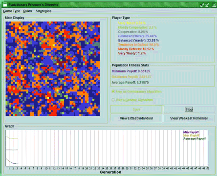

I've been lecturing at the Institute of Art, Design & Technology (IADT), Dun Laoghaire since 2007. Prior to that I completed a BSc (Hons) in Computer Applications [Computer Science] in Dublin City University (DCU), followed by a PhD focusing on Speech Signal Processing, also in DCU.
I'm currently teaching modules in Programming, Usability Engineering, Computer Networks & Distributed Systems, and Human-Computer Interaction. I previously taught modules in Computer Technology, Computer Architecture & Operating Systems, and Data Visualisation. I also supervise undergrad and masters by research postgrad students.
Here are some examples of student projects I supervised in 2013-14:
And here's an introductory lecture on Data Visualisation I gave to students from the UCD Quinn School of Business in April 2014:
My research interests include signal processing and machine learning. I am particularly interested in a range of spoken language technologies, including: speech recognition, speech synthesis, speech enhancement, and voice conversion.
A. Errity, "Exploring the dimensionality of speech using manifold learning and dimensionality reduction methods," Ph.D. thesis, Dublin City University, 2010.
A. Errity and J. McKenna, "A comparison of linear and nonlinear dimensionality reduction methods applied to synthetic speech," in Proc. of Interspeech 2009 - Eurospeech, Brighton, UK, September 2009, pp. 1095-1098.
A. Errity, J. McKenna, and B. Kirkpatrick, "Manifold learning-based feature transformation for phone classification," in Advances in Nonlinear Speech Processing, International Conference on Non-Linear Speech Processing, NOLISP 2007, Paris, France, May 22-25, 2007, Revised Selected Papers, ser. Lecture Notes in Computer Science, M. Chetouani, A. Hussain, B. Gas, M. Milgram, and J.-L. Zarader, Eds., vol. 4885. Springer, 2007, pp. 132-141.
A. Errity, J. McKenna, and B. Kirkpatrick, "Dimensionality reduction methods applied to both magnitude and phase derived features," in Proc. of Interspeech 2007 - Eurospeech, Antwerp, Belgium, August 2007, pp. 1957-1960.
B. Kirkpatrick, D. O'Brien, R. Scaife, and A. Errity, "On the role of spectral dynamics in unit selection speech synthesis," in Proc. of Interspeech 2007 - Eurospeech, Antwerp, Belgium, August 2007, pp. 2889-2892.
A. Errity and J. McKenna, "A comparative study of linear and nonlinear dimensionality reduction for speaker identification," in Proc. of the 15th Int. Conf. on Digital Signal Processing (DSP), Cardiff, Wales, July 2007, pp. 587-590.
B. Kirkpatrick, D. O'Brien, R. Scaife, and A. Errity, "Spectral dynamics as a source of discontinuity in concatenative speech synthesis," in Proc. of the 15th Int. Conf. on Digital Signal Processing (DSP), Cardiff, Wales, July 2007, pp. 615-618.
A. Errity, J. McKenna, and B. Kirkpatrick, "Manifold learning-based feature transformation for phone classification," in Proc. of the ISCA Tutorial and Research Workshop on Nonlinear Speech Processing (NOLISP), Paris, France, May 2007, pp. 43-46.
As a final year undergraduate project I developed a piece of software entitled "Evolving Strategies for the Prisoner's Dilemma" which utilises Genetic Algorithms to evolve solutions to a classic problem of Game Theory. The software creates a virtual world whose inhabitants are all engaged in games of the Prisoner's Dilemma. The players are permitted to reproduce based on their performance in the game. This can lead to distinct species/tribes of players which fight for dominance of the world.

Further details regarding this project may be found below:
Source Code
JAR file
Technical Manual
Presentation
I've worked with a number of industry partners on projects including mobile app development, UX consultancy, and data visualisation. Many of these projects were facilitated by the Enterprise Ireland Innovation Vouchers scheme. Please get in touch if you think we could work together on a project.
Android, iOS and Web app design and development.
Applying user-centred design techniques to produce great user experiences.
Producing effective graphical representations of data sets. See an example Irish cartogram.
Feel free to contact me with any queries.